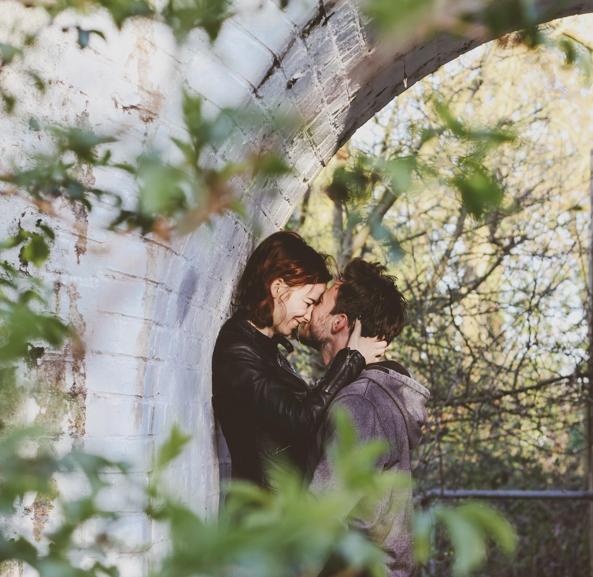

Fly
Closest major airport: Columbia Metropolitan (CAE), about 45 minutes by car. Charlotte (CLT) is a strong alternate with more flights.
Etienne & Nafisat
September 5, 2026 · Holy Trinity Catholic Church · Orangeburg, SC
The day
Two celebrations of family and tradition—one in Nigeria, one in Orangeburg. Dress code for both: traditional attire.
Dr Isa Mohammed’s house · Nagazi Uvete, Adavi LGA, Kogi State
The families of Dr Isa Mohammed and Yanou Christophe cordially invite you to the traditional marriage ceremony of their children.
Holy Trinity Catholic Church · 2202 Riverbank Dr, Orangeburg, SC
Photos begin at 11:00. Please arrive ready so we can start on time before the ceremony.
Holy Trinity Catholic Church · 2202 Riverbank Dr, Orangeburg, SC
Join us for a traditional wedding ceremony honoring our families, culture, and the blessings that bring us together. Afterward: dinner, drinks, music, and dancing.
Get directionsAccommodations
We’re sharing hotels near Orangeburg with guest rates. Weekend rooms go quickly—please book early if you plan to stay overnight.
Prefer to manage bookings in one place? Hotel options and any negotiated rates also live on our Joy travel page.
See hotels on JoyGetting here
The Orangeburg ceremony is at Holy Trinity Catholic Church on Riverbank Drive. Here’s the simplest path for out-of-town guests.
Closest major airport: Columbia Metropolitan (CAE), about 45 minutes by car. Charlotte (CLT) is a strong alternate with more flights.
Plan on rideshare or a rental for the last stretch into Orangeburg. Parking is available near the church; rideshares work well if you’d rather not drive.
Holy Trinity Catholic Church
2202 Riverbank Dr
Orangeburg, SC 29118

Our story
The first time I saw him, we were both waiting at the same gate for a flight to San Diego. I glanced over and thought, Wow, he’s cute. When I got to my seat, the one next to me was empty—and I wondered how amazing it would be if he sat there.
And he did. We talked, he asked for my number, and then we went our separate ways. I was sure I’d never hear from him again. Then, months later, out of the blue: “Happy New Year.” From there, it felt like nothing had ever changed.
Helpful details
Quick answers so you can plan with confidence. More live updates stay on Joy.
Please RSVP by April 15 so we can finalize our headcount. Use the RSVP button at the top of this page.
Please check your invitation to see if a plus-one is included.
Traditional attire for the ceremonies and celebration. When in doubt, dress up and lean into color and cultural dress.
Early September in Orangeburg is typically warm. Days can feel humid; evenings cool a little. A light layer is wise if you’ll be outside after sunset.
Yes—please share them in the Joy app (event handle etienne-and-nafisat). Kindly put phones away during the ceremony itself.
Yes. If you need help getting around the property, let us know ahead of time so we can make sure you’re comfortable.
Gifts
Your presence is the greatest gift of all. If you’d like to give something, we’ve created a wish list on Joy.
View registry